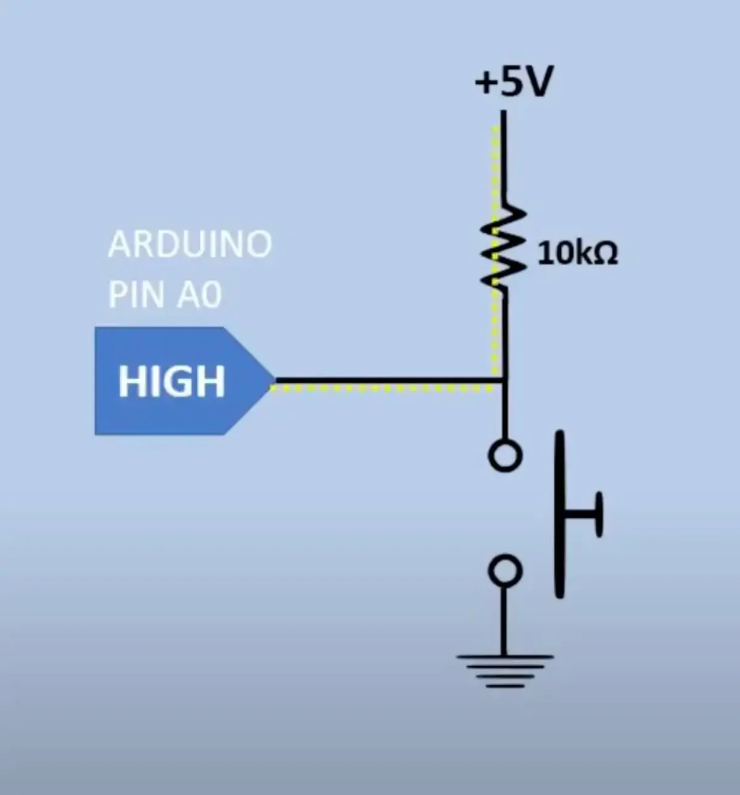
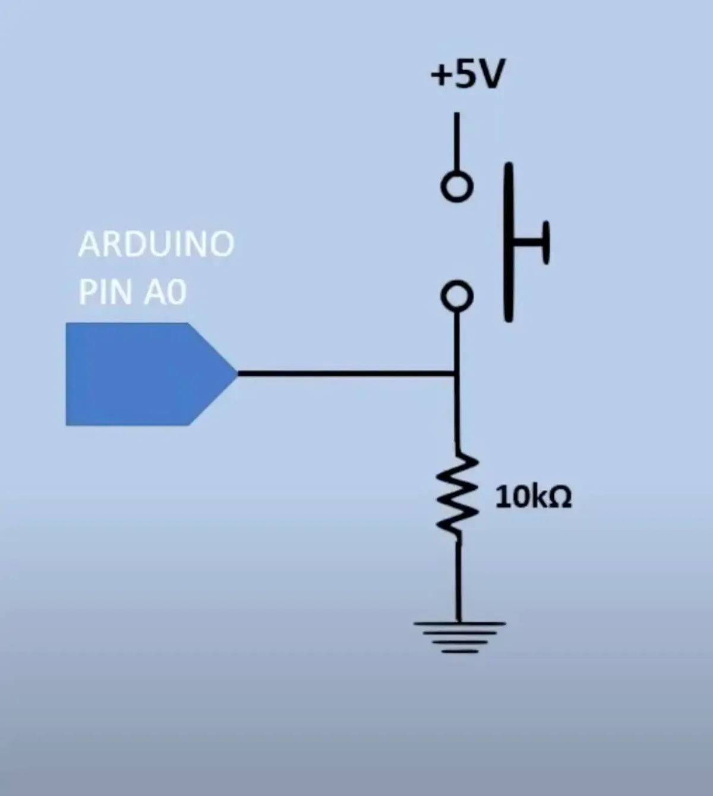

ADC: Analog-to-Digital Conversion (ADC) for Input - Arduinos typically operate with a 10-bit ADC (Analog-to-Digital Converter), which is used to convert the voltage from analog sensors (like a potentiometer or temperature sensor) into a digital value that the microcontroller can process.
Amp: A, 1 amp = 1 coulomb per 1 second.
analogWrite(): analogWrite (pin, value); value takes integers between 0 and 255 (8-bit value). The analogWrite function has nothing to do with the analog pins or the analogRead function. The analogWrite() function, despite its name, doesn’t actually output a true analog signal but instead uses Pulse Width Modulation (PWM) to simulate an analog output. PWM works by rapidly turning the digital pin on and off, and the average voltage depends on the fraction of time the pin is "on" (this is known as the duty cycle).
"bit": In the context of analog-to-digital conversion (ADC), 10-bit refers to the resolution of the conversion process, or the number of discrete digital values that the ADC can output. Here’s what 10-bit means in this specific context:
Definition of 10-bit:
Coulomb: Unit of electric charge, C. A coulomb is holds the equivalent charge of 6.242 * 10^18 electrons. We use coulombs because one elecron's charge is miniscule (equivalent to -1.602 * 10^-19 C).
Conductors: Low levels of resistance/high conductivity, such as copper, gold, and silver.
Current: I, the flow of charged particles through a conductor, measured in amps.
Diode: A diode is a two-terminal electronic component that conducts current primarily in one direction (asymmetric conductance). It has low (ideally zero) resistance in one direction and high (ideally infinite) resistance in the other. An LED is an example of a diode.
Insulators: Materials with high levels of resistance/low conductivity.
Joule: Unit of energy. 1 joule is the amount of energy needed to move an object with a force of 1 Newton (e.g. weight of a small apple) over a distance of 1 meter.
Ohm's Law: Linear relationship between current, voltage, and resistance. To calculate the current; I = V/R.
Pull up: 
Pull down: 
PWM: Arduinos don't have true analog output (DAC, or Digital-to-Analog Conversion). Instead, they simulate analog output using Pulse-Width Modulation (PWM) on specific pins. In this process, the Arduino rapidly switches the output pin on and off at a certain frequency. By varying the "on" time relative to the "off" time (the duty cycle), the average voltage output can be controlled. This mapping occurs because an 8-bit number can represent 256 different values (2^8 = 256).
Resistance: R, measured in ohms (Ω).
Resistors: Slows down electrons due to the atomic makeup of a material. Electrons in the current are colliding with atoms and other electrons, which not slows down the entire current, but can also create a byproduct through the collisions, such as heat or light. Materials that have high resistance are called insulators. The level of resistance depends on the material, size, diameter, length, temperature, etc., of the conductor.
Voltage: Electromotive force. Difference in electric potential between two points. The higher the voltage, the higher the number of electrons getting pushed into the current. Measured in volts, denoted by a V. One volt is equivalent to 1 joule per 1 coulomb. 1 joule is equal to 1 Newton per 1 meter. 1 Newton is equivalent to the force needed to push a kilogram of mass (e.g. an apple) 1 meter per second squared. Without voltage, electrons move randomly, voltage pushes electrons through a circuit.